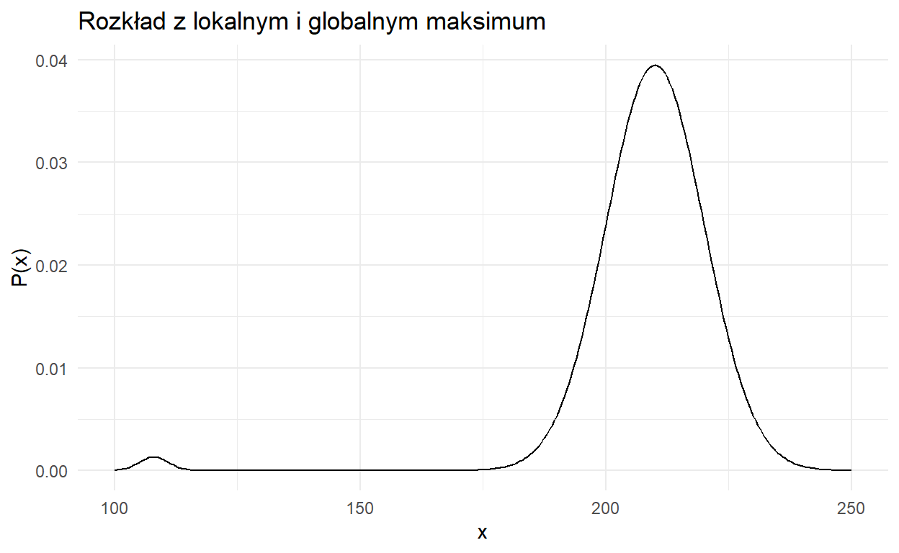
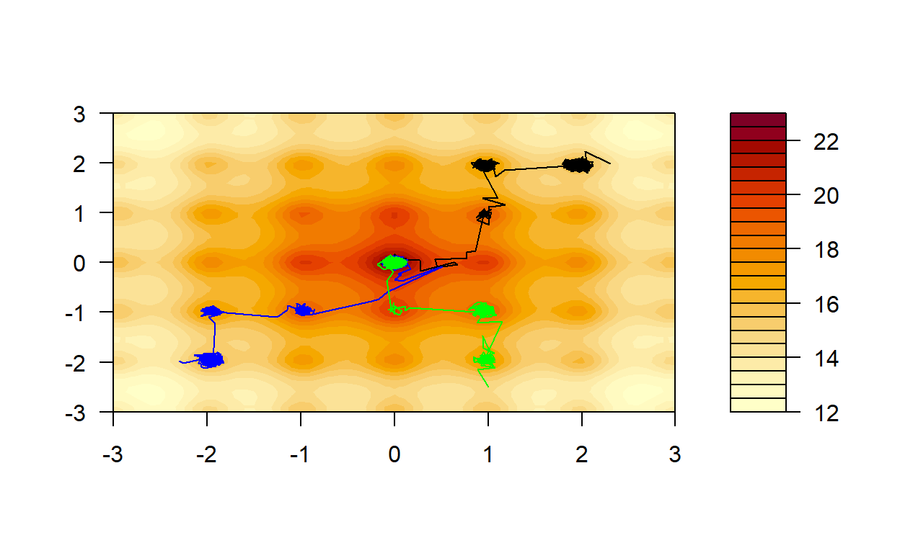
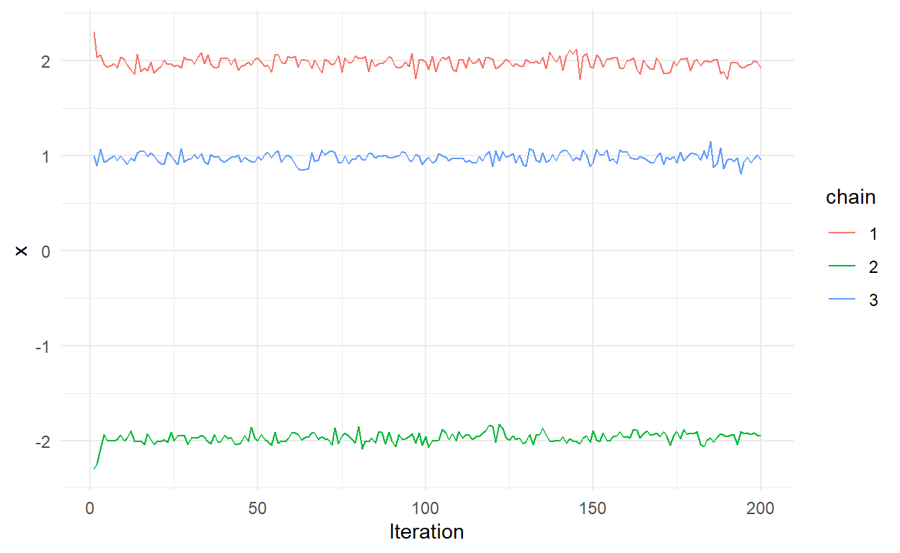
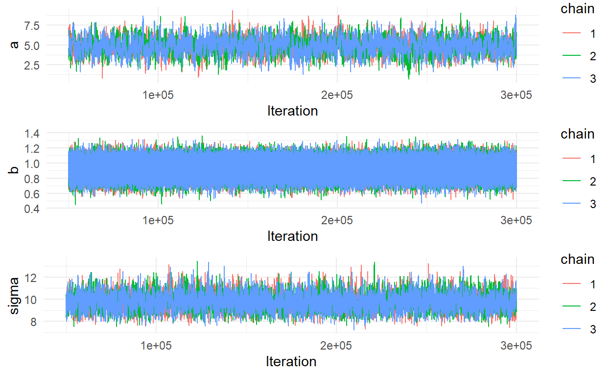
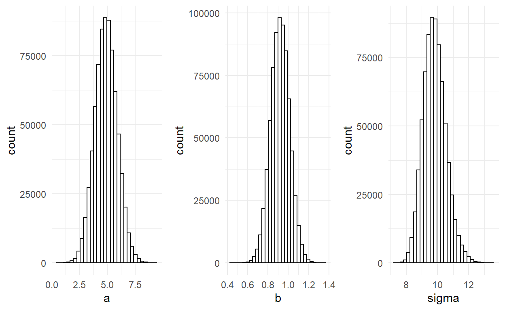
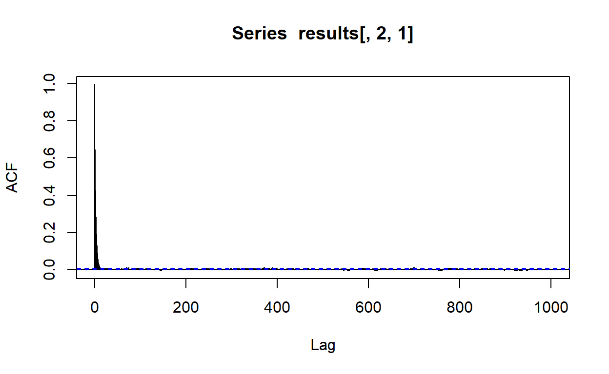
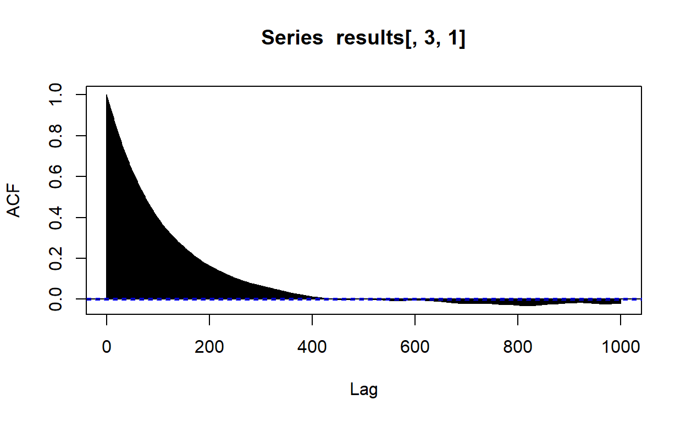
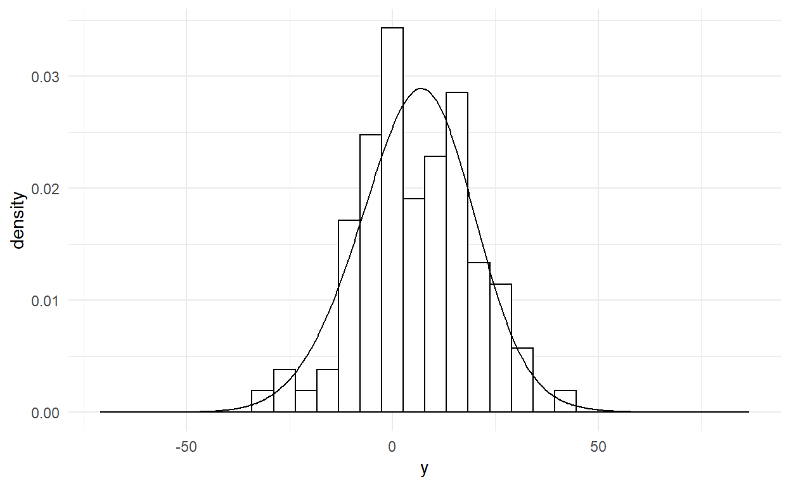

Część II: Estymacja modeli bayesowskich
Post będzie aktualizowany.
W poprzedniej części dowiedzieliśmy się na czym polega wnioskowanie bayesowskie. W następnych częściach będziemy budować modele bayesowskie i będziemy używać do tego dedykowanych pakietów i oprogramowania. Dlatego dzisiaj dowiemy się jak od wewnątrz wygląda estymacja rozkładów post priori, gdy nie jest to możliwe metodą analityczną.
Załóżmy, że zdefiniowaliśmy sobie jakąś funkcję wiarygodności i rozkłady a priori parametrów \(\theta\). Chcemy numerycznie przybliżyć rozkład \(P(\theta|y)\)
\[P(\theta|y) \propto P(y|\theta)P(\theta)\]
Istnieją dwie najpopularniejsze metody numerycznej estymacji modeli bayesowskich - MCMC i Variational Bayes.
Variational Bayes to metoda, która zmniejsza wymagania obliczenowe przyjmując pewne upraszczające założenia, dzięki czemu można ją efektywnie stosować do dużych zbiorów danych.
MCMC (Markov Chain Monte Carlo) jest metodą która jest dokładniejsza, ale bardziej czasochłonna i to ją dziś wam przedstawię.
Zastanówmy się przez chwilę nad problemem znalezienia rozkładów post priori. Gdybyśmy szukali najlepszych estymat punktowych parametrów, jak w częstościowym wnioskowaniu, moglibyśmy ewaluować naszą funkcję \(P(\theta|y)\) i szukać takich \(\theta\) dla których przyjmuje najwyższą wartość.
Moglibyśmy to na przykład zrobić w ten sposób. Dla funkcji \(f(x)\) zaczynamy z losową wartością \(x\). W następnym kroku dodajemy małą losową wartość \(\Delta\) do \(x\) i sprawdzamy czy \(f(x + \Delta)\) jest większe. Jeśli tak, \(x + \Delta\) staje się naszym \(x\). Jeśli nie, powtarzamy porzednie kroki. Zatrzymujemy się wtedy, gdy \(x\) przestanie się zmieniać.
Ten algorytm ma pewną wadę, ponieważ odszuka on najbliższe lokalne maksimum, które nie musi być globalnym. Do tego jeszcze wrócimy.
W podejsciu bayesowskim szukamy rozkładu \(P(\theta|y)\). Moglibyśmy go przybliżyć losując próbę z niego. Ale jak wylosować próbę z rozkładu, którego nie znamy? Możemy najpier poszukać środka rozkładu za pomocą wyżej opisanej metody. Gdy już go znajdziemy, możemy zasymulować losowanie w prosty sposób. Jeśli \(P(\theta|y)\) ma wartość 0.2 w pewnym miejscu rozkładu, a w 0.1 w innym, to wiemy że pierwsza wartość \(\theta\) musi występować średnio dwa razy częściej.
Możemy więc przyjąć następującą strategię:
Ta wersja MCMC to algorytm Metropolisa-Hastingsa. Żeby być rzetelnym, prawdopodobnie musiałbym zacząć od przedstawienia wam czym jest proces stochatyczny, łańcuchy Markova, rozkład stacjonarny, et cetera. Ale ponieważ chcę się skupić na pokazaniu jak wygląda estymacja MCMC w praktyce, pominę to. Dowód i opis matematyczny działania algorytmu Metropolisa-Hastingsa możecie znaleźć tutaj.
Skąd wiemy, że losujemy z właściwej przestrzeni parametrów rozkładu? Żeby wyjaśnić ten termin pójrzmy na wykres poniżej.

Jak widzimy, ten rozkład prawdopodbieństwa ma dwa maksima. Chcielibyśmy, by rozkład post priori był odwzorowany jak najdokładniej. Jednak nasz algorytm może w utknąć makismum po lewej, dając nam błędne przybliżenie rozkładu.
Czy nasz algorytm jest w stanie poradzić sobie z tym? Odowiedź brzmi: Wykonując nieskończoną liczbę iteracji, wartości zbiegną do właściwej przestrzeni rozkładu. Dzieje się tak dlatego, że nasz algorytm może poruszać się także po mniejszych wartościach \(P(\theta|y)\), jest więc w stanie opuścić lokalne maksima.
My jednak nie dysponujemy nieskończoną liczbą iteracji. Dlatego algorytm powtarzamy \(n\) razy. Każdą instancję nazywamy łańcuchem, a ponieważ każdy łańcuch rozpoczyna w innym losowym miejscu przestrzeni parametrów, jeśli łańcuchy się zbiegną, możemy domniemywać, że odnaleźliśmy właściwą przestrzeń i zacząć losować próbki z naszego rozkładu.
Zobaczmy to na przykładzie, który kiedyś podpatrzyłem i wydaje mi się idealny do zaprezentowania działania MCMC. Weźmy sobie pewną funkcję, która jako argumenty bierze \(x\) i \(y\).
Jak widzimy, nasza funkcja ma wiele lokalnych maksimów, ale tylko jedno globalne na środku. Sprawdźmy jak poradzi sobie nasz algorytm. Uwaga, funkcja, której używamy nie jest rozkładem prawdopodbieństwa, dlatego algorytm wygląda trochę inaczej niż w podpunktach przedstawionych wcześniej.
jmp = 0.2 # step size
iter = 10000 #liczba iteracji algorytmu
chain = 3 # liczba łańcuchów
samples = array(NA, c(10000,3,3)) # Pusty tensor na nasze próbki
# Wartości początkowe łańcuchów
samples[1,1,1] = 2.3
samples[1,2,1] = 1.98
samples[1,1,2] = -2.3
samples[1,2,2] = -1.98
samples[1,1,3] = 1
samples[1,2,3] = -2.5
for (j in 1:chain){
samples[1,3,j] = f(samples[1,1,j], samples[1,2,j]) # ewaluujemy naszą funkcję dla wartości
# początkowych łańcuchów
n = 1
while(n <= (iter-1)) { #Iterujemy dopóki nie zbierzemy 'iter' próbek
new_x = rnorm(1, samples[n,1,j], jmp) # przemieszczamy się o losową wartość dla wartości x
new_y = rnorm(1, samples[n,2,j], jmp) # przemieszczamy się o losową wartość dla wartości y
if (exp(-12*(f(samples[n,1,j], samples[n,2,j])-f(new_x, new_y))) > runif(1,0,1)) {
# Sprawdzamy czy nowe wartości zwracają wyzszą wartość naszej funkcji. Poniweważ funkcja nie
# jest rozkładem prawdopodobieństwa nie możemy policzyć stosunku prawdopodobieńst. Zamiast
# tego używamy funkcji eksponencjalnej różnicy pomnożonej przez ujemną stałą.
n = n + 1
samples[n,1,j] = new_x
samples[n,2,j] = new_y
samples[n,3,j] = f(new_x, new_y)
}
}
}Zobaczmy jak poradziły sobie nasze łańcuchy.
filled.contour(x=points[,1], y=points[,1], z =f(points,t(points)), nlevels=20, plot.axes = {
axis(1); axis(2); lines(samples[1:10000,1:2,1], col =
"black");lines(samples[1:10000,1:2,2], col = "blue"); lines(samples[1:10000,1:2,3], col =
"green") })
Łańcuchy znajdowały na swojej drodze lokalne maksima, w których pozostawały na jakiś czas, po czym zmierzały do następnych. Ostatecznie wszystkie zbiegły się do lokalnego maksimum.
Dobrze. Wiemy, że nasz algorytm znalazł globalne maksimum, ponieważ znamy funkcję, której ekstremum szukamy. Jednak w przeciwieństwie do powyższego przykładu, zwykle nie znamy funkcji generującej rozkład post priori - dopiero staramy się go estymować. Jak więc sprawdzić czy znaleźliśmy własciwą przestrzeń losowania? Spójrzmy na pierwsze 200 interacji dla argumentu \(x\).
x_samples = as.data.frame(samples[1:iter,1,1:3])
x_samples$iteration = 1:dim(samples)[1]
colnames(x_samples) = c(1,2,3,"Iteration")
x_samples_burn_in = x_samples[1:200,]
x_samples_in_space = x_samples[2000:2500,]
x_samples_burn_in = pivot_longer(x_samples_burn_in,cols =1:3, names_to = "chain", values_to = "x")
x_samples_in_space = pivot_longer(x_samples_in_space,cols =1:3, names_to = "chain", values_to = "x")
ggplot(x_samples_burn_in, mapping = aes(x = Iteration, y = x, color = chain))+
geom_line() +
theme_minimal()
Widzimy, że każdy łańcuch oscyluje wokół innej wartości. Teraz spójrzmy na iteracje między 2000 a 2500.
ggplot(x_samples_in_space, mapping = aes(x = Iteration, y = x, color = chain))+
geom_line() +
theme_minimal()Widzimy, że wszytkie łańcuchy się zbiegły. Co prawda, nie daje nam to całkowitej pewności, że łańcuchy odnalazły właściwą przestrzeń.
Działanie algorytmu MCMC dzieli się na dwie części: wypalanie (burn-in) i losowanie z rozkładu post priori. Wypalamy łańcuchy dopóki się nie zbiegną, wtedy możemy rozpocząć estymacje rozkładu post priori z próbek z łańcuchów. Im większej liczby łańcuchów użyjemy, tym silniejszą mamy przesłankę (gdy wszystkie się zbiegną), że odnaleźliśmy właściwą przestrzeń losowania.
Nabyliśmy już intuicję, jak działa MCMC. Zabierzmy się więc za prawdziwy statystyczny problem.
Powiedzmy, że chcemy policzyć bayesowską regresję liniową zmiennej \(y\) ze względu na \(x\):
\[y_i = \alpha + \beta x_i + \epsilon{_i}\] gdzie \(\alpha\) to stała, \(\beta\) to współćzynnik regresji a \(\epsilon{_i}\) to błąd.
Wytwórzmy sobie przykładowe dane:
W ujęciu Bayesowskim będziemy szukali rozkładów post priori interesujących nas parametrów. Naszą zmienną zależną zamodelujemy w następujący sposób:
\[ y_i \sim N(\alpha + \beta x_i, \sigma)\]
Co oznacza, że wartość zmiennej zależnej u każdej obserwacji jest wylosowana z rozkładu normalnego o średniej \(\alpha + \beta x_i\) i odchyleniu standardowym \(\sigma\). Jednocześnie, jak widzimy, jest to nasza funkcja wiarygodności \(P(y|\theta)\) - prawdopodbieństwo otrzymania \(y\) pod warunkiem parametrów \(\alpha\), \(\beta\) i \(\sigma\) zapisanych w skrócie jako wektor \(\theta\). Musimy zdefiniować jeszcze rozkłady a priori dla parametrów \(\theta\) i możemy przystąpić do obliczania rozkładów post priori interesującyh nas parametrów. W tym przykładzie użyjemy nieinformatywnych rozkładów a priori. Zamodelujemy \(\alpha\) i \(\sigma\) rozkładami jednostajnymi, a \(\beta\) rozkładem normalnym o średniej 0.
Zaimplementujmy algorytm Metropolisa-Hastingsa by wyestymować rozkłady parametrów regresji.
# Definujemy naszą funkcję wiarygodności, prior i posterior. Zwrócie uwagę, że funkcję
# zwracają nam logarytm naturalny gęstości prawdopodobieństwa. Jest to użyteczna
# transformacja, ponieważ komputery nie radzą sobie dobrze z wartościami bardzo bliskimi 0.
likelihood <- function(parameters){
a=parameters[1]; b=parameters[2]; sigma=parameters[3]
sum(dnorm(y,a +b*x, sigma, log = TRUE))
}
prior <- function(parameters){
a=parameters[1]; b=parameters[2]; sigma=parameters[3]
sum(dunif(a,-1000,1000,log = TRUE), dnorm(b,0,100,log = TRUE),
dunif(sigma,0.000001,1000,log = TRUE))
}
posterior <- function(parameters) {likelihood(parameters) + prior(parameters)}
chain = 3 # Liczba łańcuchów
n.iter <- 300000 # Liczba iteracji
results <- array(NA, c(n.iter,3,3)) # Pusty tensor na nasze próbki
n.burn = 50000 # Liczba iteracji, którą odrzucimy w ramach wypalania
for (j in 1:chain){
parameters <- c(runif(1,-50,50), rnorm(1,0,10),runif(1,0.000001,100)) # Losujemy wartości początkowe dla łańcucha
results[1,,j] <- parameters
naccepted = 2
while(naccepted <= n.iter){
candidate <- rnorm(3, mean = parameters, sd = 0.1) # przemieszczamy się o losową wartość
# parametrów od wartości obecnych parametrów
ratio <- exp(posterior(candidate) - posterior(parameters)) # Odejmujemy ponieważ log(a/b)
# = log(a) - log(b). Różnicę wkladamy do funckcji eksponencjalnej by z logarytmów otrzyamć
# stosunek prawdopodobieństw.
if (runif(1) < ratio) {parameters <- candidate
results[naccepted, ,j] <- parameters
naccepted = naccepted + 1}
}}
results <- results[(n.burn+1):n.iter,,] # Usuwamy 'n.burn' pierwszych iteracji
all_chains = data.frame()
for (i in 1:chain){
all_chains = rbind(all_chains,data.frame(results[,,i], chain = as.character(i), Iteration = (n.burn+1):n.iter))
}
colnames(all_chains) = c("a", "b", "sigma","chain", "Iteration")Mamy to! Sprawdźmy czy nasze łańcuchy się zbiegły.
library(gridExtra)
p1 <- ggplot(all_chains, mapping = aes(x = Iteration, y = a, color = chain))+
geom_line() +
theme_minimal()
p2 <- ggplot(all_chains, mapping = aes(x = Iteration, y = b, color = chain))+
geom_line() +
theme_minimal()
p3 <- ggplot(all_chains, mapping = aes(x = Iteration, y = sigma, color = chain))+
geom_line() +
theme_minimal()
grid.arrange(p1, p2,p3, nrow = 3)
Wizualna inspekcja wskazuje, że łańcuchy zbiegły sie wystarczająco (póżniej poznamy ilościowe wskaźniki). Zobaczmy rozkłady post piori.
p1 <- ggplot(all_chains, mapping = aes(x = a))+
geom_histogram(fill = "white",color="black",) +
theme_minimal()
p2 <- ggplot(all_chains, mapping = aes(x = b))+
geom_histogram(fill = "white",color="black",) +
theme_minimal()
p3 <- ggplot(all_chains, mapping = aes(x = sigma))+
geom_histogram(fill = "white",color="black") +
theme_minimal()
grid.arrange(p1, p2, p3, nrow = 1)
Policzmy statystyki rozkładów.
summary(all_chains[,1:3]) a b sigma
Min. :0.6338 Min. :0.4456 Min. : 7.213
1st Qu.:4.2037 1st Qu.:0.8558 1st Qu.: 9.315
Median :4.8798 Median :0.9194 Median : 9.779
Mean :4.8822 Mean :0.9195 Mean : 9.819
3rd Qu.:5.5547 3rd Qu.:0.9830 3rd Qu.:10.274
Max. :9.3682 Max. :1.3589 Max. :13.426 Porównajmy z klasyczną regresją.
m = lm(y~x)
data.frame(a = m$coefficients[1], b = m$coefficients[2], sigma = sd(m$residuals), row.names = "Parameters") a b sigma
Parameters 4.919473 0.9192618 9.606116Gdy już mamy nasz model, musimy sprawdzić czy został wyestymowany poprawnie oraz w jakim zakresie jest w stanie odtworzyć zaobserwowane dane.
Statystyka Gelmana-Rubina sprawdza ilościowo czy łańcuchy się zbiegły. Opiera się na stosunku wariancji między łańcuchami do wariancji wewnątrz łańcuchów (Gelman & Rubin, 1992).
\[\begin{eqnarray*} \bar{x}_j & = & \frac{1}{N}\sum_{t=1}^N x_t^{(j)}\hspace{2em}\text{(Średnia łańcucha)}\\ \bar{x}_\cdot & = & \frac{1}{J}\sum_{j=1}^J \bar{x}_j\hspace{2em}\text{(Średnia łańcuchów)}\\ B & = & \frac{N}{J-1} \sum_{j=1}^J (\bar{x}_j-\bar{x}_\cdot)^2\hspace{2em}\text{(Wariancja pomiędzy łańcuchami)}\\ s^2_j & = & \frac{1}{N-1} \sum_{t=1}^N (x_t^{(j)}-\bar{x}_j)^2\hspace{2em}\text{(Wariancja wewnątrz łańcucha)}\\ W & = & \frac{1}{J}\sum_{j=1}^J s_j^2\hspace{2em}\text{(Średnia wariancja wewnątrz łańcuchów)} \end{eqnarray*}\]
Gdzie \(N\) to liczba iteracji, a \(J\) to liczba łańcuchów. Statystyka Gelmana Rubina jest dana wzorem:
\[R = \frac{ \frac{N-1}{N}W + \frac{1}{N}B }{W}\]
Zwykle uznaje się, że łańcuchy się zbiegły, jeśli R < 1.15. Statystykę liczy się dla każdego parametru. W przypadku naszej regresji:
BW = pivot_longer(all_chains,cols = 1:3, names_to = "parameter", values_to = "Value")
BW = BW %>% group_by(parameter,chain) %>% summarise(Mean = mean(Value), Var = var(Value), n =n())
W = BW %>% group_by(parameter) %>% summarise(W = mean(Var)/3)
B = BW %>% group_by(parameter) %>% summarise(B = var(Mean))
R = (W$W*((n.iter - n.burn - 1)/(n.iter - n.burn)) + B$B)/W$W
names(R) = c("a","b","sigma")
kable(R,col.names = "R")| R | |
|---|---|
| a | 1.001088 |
| b | 1.000062 |
| sigma | 1.003041 |
Każdy parametr spełnia kryterium Gelmana-Rubina.
Jak wspominałem już wielokrotnie wcześniej, MCMC ma symulować losowanie z rozkładu a posteriori. Wyobraźmy sobie taką sytuację - losujemy 1000 osób, by estymować rozkład wzrostu w populacji. Obserwacje są od siebie niezależne, wylosowanie osoby A nie ma wpływu na prawdopodobieństwo wylosowania osoby B. W przypadku łańcuchów nie jest to prawdą. Zauważmy, że wylosowanie obserwacji B, zależy od tego jaką wartośc ma obserwacja A.
W MCMC poruszamy się od obserwacji do obserwacji różniących się o jakąś małą losową wartość. W następstwie w łańcuchach występuje autokorelacja. Jeśli jest duża, może zbiasować nasz rozkład a posteriori, ponieważ pewne wartości będą nadreprezentowane, a efektywna liczba prób z rozkładu post priori będzie mniejsza niż N.
Autokowariancja dla opóźnienia (lag) \(t\) jest zdefiniowana tak:
\[aCov(t) = \frac{1}{N - t} \sum_{n=1}^{N-t} (\theta_n - \mu_f)\,(\theta_{n+t}-\mu_\theta)\]
gdzie
\[\mu_\theta = \frac{1}{N}\sum_{n=1}^N \theta_n\]
a \(\theta_n\) to wartość wylosowana przez łańcuch w iteracji \(n\).
Autokorelacja dana jest więc:
\[aCor(t) = aCov(t)/aCov(0)\]
Sprawdźmy autokorelację dla pierwszego łańcucha i parametru \(\beta\).
acf(results[,2,1],lag.max = 1000)
Wyglada to dobrze. Slina autokorleacja występuje tylko dla bardzo małego opóźnienia. Sprawdźmy teraz autokorelacje parametru \(\sigma\).
acf(results[,3,1],lag.max = 1000)
W przypadku \(\sigma\) wygląda to gorzej. Możecie się spotkać z tym, że niektórzy badacze by zmniejszyć autokorelacje, stosują odchudzanie (thinning), polegające na tym, do naszej próby rozkładu post priori bierzyemy co \(n\)-tą wartość z łańcucha.
Jednakże, odchudzanie nie jest najlepszą strategią. Historycznie odchudzanie było stosowane z chęci zaoszczędzenia pamięci komputerów. Choć zmniejsza autokorelację, odchudzanie zmniejsza precyzję naszych wyników (Link & Eaton, 2012).
Zastanówmy się dlaczego. Chcielibyśmy by średnia wartości naszego łańcucha była jak najbliższa prawdziwej średniej rozkładu.
Jak pamiętamy, wariancja dla rozkładu średnich niezależnych prób losowych wynosi (zauważcie, że to inna \(\sigma\) niż wcześniej):
\[\sigma^2 = \frac{1}{N}\mathrm{Var}(\theta)\]
Jednak, jeżeli obserwacje są skorelowane, wariancja wynosi:
\[\sigma^2 = \frac{\tau}{N}\mathrm{Var}(\theta)\]
Dlaczego tak jest, to na razie pominiemy (wymagało by to dłuższego zatrzymania się nad tym problemem, niemniej być może do tego wrócimy). \(\tau\) to zintegrowana funkcja autokorelacji (integrated autocorrelation function) dana wzorem:
\[ \tau =1 + 2\sum^N_{t= 1} \mathrm{aCor(t)}\] Wobec tego \(\frac{N}{\tau}\) to efektywna liczba próbek (ESS), a \(\tau\) to liczba iteracji jakie musi minąć łańcuch zanim “zapomni” gdzie sie zaczął.
Popatrzmy na wykres autokorelacji dla \(\beta\). Do pewnego \(t\) autokorelacja jest malejącą funkcją, po przekroczeniu \(t\) zaczyna oscylować wokół 0. Ponieważ autokorelacje mogą być tylko pozytywne gdy \(N\) dąży do nieskonczoności, obserwowane empirycznie negatywne korelacje na pewno wynikają z szumu (Geyer, 1992). Sumowanie ich by otrzymać zmniejszy nam estymatę \(\tau\). Rownież te małe dodatnie korelacje są efektem szumu.
Zwróćmy uwagę na wzór na autokowariancję. Im większy lag \(t\) tym mniejsza liczebność próbki (wynosi \(N-t\)), z której liczymy autokowariancę. W związku z tym im większe \(t\) tym bardziej zaszumione estymaty autokowariancji otrzymujemy. Jednym ze sposóbw na obejście tego problemu jest estymowanie \(\tau\) w następujący sposób:
\[ \tau =1 + 2\sum^M_{t= 1} \mathrm{aCor(t)}\] Gdzie \(M\) jest ostatnią największą wartością \(t\) dla której wszystkie \(t < M\) mają dodatnią autokowariancję.
Policzmy efektywną liczbę próbek dla parametru \(\sigma\) i łańcucha 1.
ESS = function(data,parameter,chain){
tmp = data[,parameter,chain]
ACF = acf(tmp,plot = F,lag.max = 10000, type = "covariance")$acf/var(tmp)
tau = 2*sum(ACF[1:(which(ACF<0)[1]-1)]) - 1
length(tmp)/tau
}
ESS(results,3,1)[1] 1174.496Teraz policzmy ESS dla odchudzonego łańcucha.
ESS(thinned_results,3,1)[1] 1166.745EES zmniejszyło się względem nieodchudzonego łańcucha. Generalnie, znacznie lepszą metodą redukowania wpływu autokorelacji, jest użycie większej liczby dłuższych łańcuchów. Odchudzanie należy stosować tylko jeśli mierzymy się z bardzo dużą autokorelacją. Reguła kciuka została zaproponowana w tej książce (Christensen et al., 2010) - odchudzać jeśli duża autokorelacja występuje powyżej lag > 30. W naszym przypadku było to więc niejako uzasadnione. Nie należy jednak stosować odchudzania jako rutyny w MCMC.
Wreszcie, gdy upewnimy się, że losoujemy z właściwej przestrzeni parametrów, i że nasze próbki przynajmnie udają, że są od siebie niezależne, czas na sprawdzenie czy nasz model właściwie modeluje to, co powinien modelować (model fit). Posterior predictive check polega na losowaniu z posterior predictive distribution, który jest rozkładem prawdopodbieństwa uzyskania nowych danych, pod warunkiem zebranych przez nas danych:
\[P(y^*|y)=\int P(y^*|\theta)P(\theta|y)d\theta\] gdzie \(y^*\), to nowe dane. W przypadku MCMC estymacja rozkładu \(P(y^*|y)\) składa się z dwóch kroków: Wylosować wartość \(\theta\) z rozkładu post priori. Wstawić wylosowane \(\theta\) do \(P(y^*|\theta)\) i wylosować \(y^*\).
Jak wygląda \(P(y^*|\theta)\)? Podobnie jak nasza funkcja wiarygodności, z tą różnicą, że tym razem nie obliczamy wiarygodności uzyskania \(n\) próbek z zadanego rozkadu, lecz po po prostu losujemy z owego rozkładu.
My sprawdzimy nasze dopasowanie modelu poprzez analizę wizualną. Wyplotujmy sobie histogram z naszych danych obok rozkładu generowanego przez model.
predicted <- NULL
for (j in 1:length(x)){
for (i in 1:chain){
predicted <- c(predicted,rnorm(dim(results)[1], results[dim(results)[1],1,i] +
results[dim(results)[1],2,i]*x[j], results[dim(results)[1],3,i]))
}}
predicted = as.data.frame(predicted)
y = as.data.frame(y)
ggplot() +
geom_histogram(data = y,mapping = aes(x = y,y = ..density..),
colour = 1, fill = "white") +
geom_density(data = predicted, aes(x =predicted, y = ..density..)) +
theme_minimal()
Wszystko wydaje się być w porządku. Problemy z posterior predictive check może świadczyć o tym, że wybraliśmy złą funkcją wiarygodności lub/i rozkłady a priori.
Uff, przebrneliśmy przez estymację bayesowską. Na szczęście od teraz będziemy stosować pakiety, które zrobią to za nas. Co ważne, zaprezentowany przeze mnie dziś kod raczej nie nadaje się do prawdziwej analizy. Dedykowane oprogramowanie przeprowadza losowanie MCMC w sposób bardziej optymalny (i skomplikowany). Warto jednak poznać na czym polega metoda estymacji, której często będziemy używać.